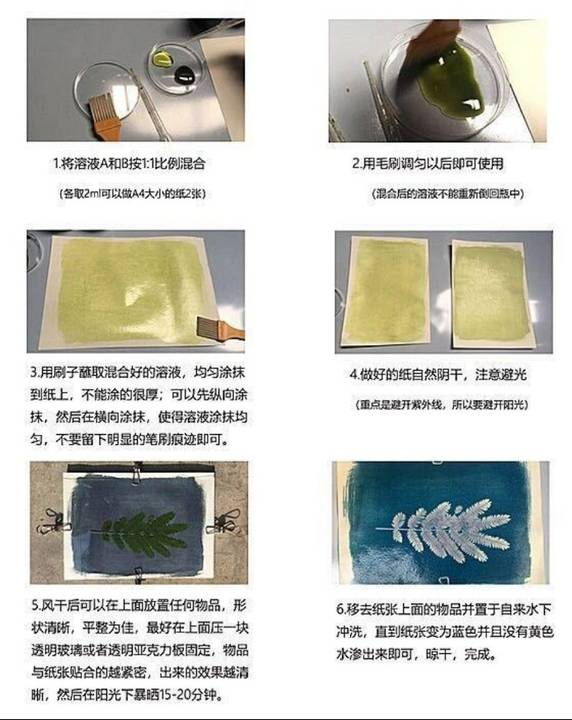
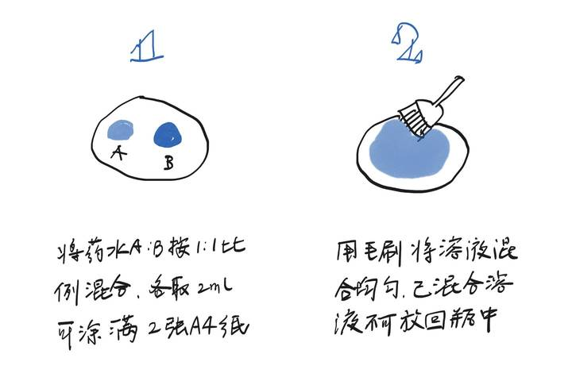
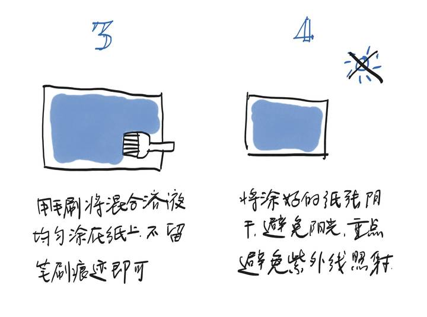
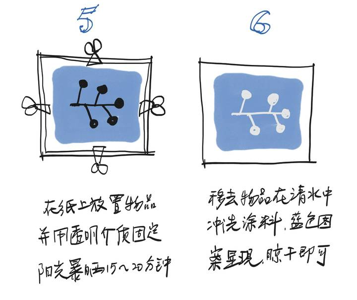

Cyanotype Workshop。
Make a print with sunlight.
Cyanotype uses light-sensitive paper to make distinctive blue prints. Arrange leaves or other objects on the surface, expose it to sunlight, then wash the paper to reveal your image.


Discover cyanotype
Find out how light-sensitive paper produces the process’s characteristic blue.
Arrange your image
Choose your objects and play with shapes, shadows and the spaces between them before exposing the paper.
Reveal the print
Wash the paper and watch the image emerge. Each print is a little experiment in light and timing.
Made with sunlight.
These hand-drawn guides show the basic stages: coat the paper, leave it to dry away from light, arrange the objects, expose and wash. We’ll guide you through the process during the workshop; the materials and activities will depend on the session.






Join us next time.
We’re planning our workshops now. We’ll share dates, venues, materials and booking details as soon as each session is confirmed.
Interested in hosting a workshop at your venue or as part of a community event? We’d love to hear from you.
Host a workshop